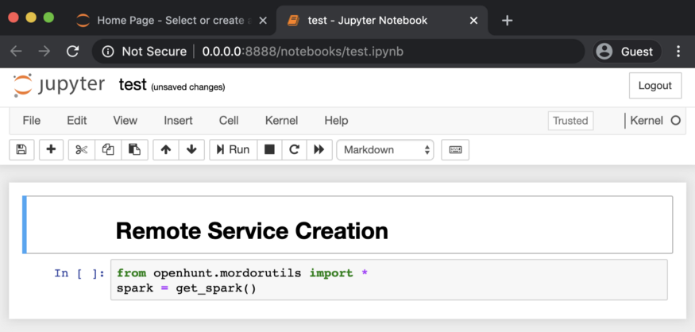

Workshop 2.1: Jupyter Notebooks Advanced#
Contributors:
Ashwin Patil (@ashwinpatil)
Luis Francisco Monge Martinez (@LuckyLuke)
Ian Hellen (@ianhellen)
Agenda:
Jupyter is not just Python
Jupyter Kernels & Python environments
Magics
Widgets introduction[
Jupyter Extensions
Export and create notebooks
Dev topics - Debugging and testing notebook code
Notebook: https://aka.ms/Jupyterthon-ws-2-1
License: Creative Commons Attribution-ShareAlike 4.0 International
Q&A - OTR Discord #Jupyterthon #WORKSHOP DAY 2 - JUPYTER ADVANCED
Jupyter is not just Python [Ashwin]#
Powershell kernel
R kernel
Jupyter Kernels & Python environments#
Python environments let you create “isolated” installations with independent versions of packages.
This is usually A VERY GOOD IDEA!
Linux
python -m venv MyNewEnv
source ./MyNewEnv/Scripts/activate
pip install msticpy
Windows
python -m venv MyNewEnv
.\MyNewEnv\Scripts\activate
pip install msticpy
Conda
conda create -n MyNewCondaEnv
conda activate MyNewCondaEnv
conda install pip
pip install msticpy
Using different Python Kernels with Jupyter#
Note: VSCode seems to be able to use Python or Conda environments anyway but installing a dedicated ipykernel is needed for debugging.
python -m ipykernel install --user --name MyNewCondaEnv --display-name "Python3 (MyNewCondaEnv)"
To remove unwanted kernels#
jupyter kernelspec remove KERNELNAME
Example
(base) e:\src\test>jupyter kernelspec list
[ListKernelSpecs] WARNING | Config option `kernel_spec_manager_class` not recognized by `ListKernelSpecs`.
Available kernels:
bhconda C:\Users\Ian\AppData\Roaming\jupyter\kernels\bhconda
bluehound C:\Users\Ian\AppData\Roaming\jupyter\kernels\bluehound
condadev C:\Users\Ian\AppData\Roaming\jupyter\kernels\condadev
mynewcondaenv C:\Users\Ian\AppData\Roaming\jupyter\kernels\mynewcondaenv
python3 C:\Users\Ian\AppData\Roaming\jupyter\kernels\python3
xpython F:\anaconda\share\jupyter\kernels\xpython
(base) e:\src\test>jupyter kernelspec remove mynewcondaenv
[RemoveKernelSpec] WARNING | Config option `kernel_spec_manager_class` not recognized by `RemoveKernelSpec`.
Kernel specs to remove:
mynewcondaenv C:\Users\Ian\AppData\Roaming\jupyter\kernels\mynewcondaenv
Remove 1 kernel specs [y/N]: y
[RemoveKernelSpec] Removed C:\Users\Ian\AppData\Roaming\jupyter\kernels\mynewcondaenv
Remove the environment if you don’t need it
Python venv - just delete the venv folder
Conda
conda remove --all -n MyNewCondaEnv
Magics [Ian]#
https://ipython.readthedocs.io/en/stable/interactive/magics.html
What are they?#
Magics are a kind of macro/function that allows you to invoke functionality of the notebook or OS independent of the kernel language.
Line magics - single %#
Only operate on the arguments on the remainder of the line
Can be mixed with other code
Cell magics - double %%#
Operate on whole cell contents
Must be in their own cell and at the start of the cell (even comments!)
Popular magics -#
%magic %env %writefile %js %hmtl %pip %logstart
Get or set environment variables#
%env
%env HOME
'C:\\Users\\Ian'
# %load ./test_mod.py
import sys
print(sys.version_info)
print(sys.platform)
Run pip#
%pip
Always use this rather than !pip
%pip show pandas
Name: pandas
Version: 1.2.1
Summary: Powerful data structures for data analysis, time series, and statistics
Home-page: https://pandas.pydata.org
Author: None
Author-email: None
License: BSD
Location: c:\users\ian\appdata\roaming\python\python37\site-packages
Requires: python-dateutil, pytz, numpy
Required-by: statsmodels, seaborn, qgrid, pandasgui, pandas-profiling, Kqlmagic, hvplot, holoviews, msticnb, msticpy
Note: you may need to restart the kernel to use updated packages.
%pip
%run test_mod.py
sys.version_info(major=3, minor=7, micro=11, releaselevel='final', serial=0)
win32
import math
max((math.pow(math.pi, x) for x in range(10)))
29809.0993334462
%timeit max((math.pow(math.pi, x) for x in range(10)))
2.78 µs ± 44 ns per loop (mean ± std. dev. of 7 runs, 100000 loops each)
%%html
<p style="border:solid; padding:20pt; color:blue; font-size:20pt; background-color:gray">
Hello Jupyterthon!
</p>
Hello Jupyterthon!
Write (or append) the contents of a cell to a file#
** Note - cell magic! **
%%writefile file_name
%%writefile -a file_name
%%writefile -a test_mod.py
print(sys.platform)
Appending to test_mod.py
Run a Python script#
%run py_file_name
%run test_mod.py
sys.version_info(major=3, minor=7, micro=11, releaselevel='final', serial=0)
win32
win32
Invoking shell commands#
Prefix with !
These are not magics - they directly invoke underlying OS commands.
Like line magics, can use these mixed with other code
!dir
Volume in drive E has no label.
Volume Serial Number is 7E50-19F7
Directory of e:\src\infosec-jupyterthon\workshops\2021\day2
11/24/2021 05:33 PM <DIR> .
11/24/2021 01:00 PM <DIR> ..
11/24/2021 05:34 PM 69,310 day2-1-Jupyter-advanced-topics.ipynb
11/23/2021 10:34 AM 4,246,504 day2-2-Visualization.ipynb
11/24/2021 04:20 PM 178,240 day2-3-Advanced-pandas.ipynb
11/24/2021 11:22 AM 39,858 day2-4-MSTICPy.ipynb
11/23/2021 10:34 AM 208,453 Holoviews.png
11/23/2021 10:34 AM 50,124 JLab_kernels1.png
11/23/2021 10:34 AM 88,887 JLab_kernels2.png
11/24/2021 05:33 PM 60 test_mod.py
11/24/2021 05:33 PM <DIR> __pycache__
8 File(s) 4,881,436 bytes
3 Dir(s) 229,351,170,048 bytes free
my_folder = !dir
print(f"Captured {len(my_folder)} lines:\n", my_folder)
Captured 18 lines:
[' Volume in drive E has no label.', ' Volume Serial Number is 7E50-19F7', '', ' Directory of e:\\src\\infosec-jupyterthon\\workshops\\2021\\day2', '', '11/24/2021 05:33 PM <DIR> .', '11/24/2021 01:00 PM <DIR> ..', '11/24/2021 05:34 PM 70,452 day2-1-Jupyter-advanced-topics.ipynb', '11/23/2021 10:34 AM 4,246,504 day2-2-Visualization.ipynb', '11/24/2021 04:20 PM 178,240 day2-3-Advanced-pandas.ipynb', '11/24/2021 11:22 AM 39,858 day2-4-MSTICPy.ipynb', '11/23/2021 10:34 AM 208,453 Holoviews.png', '11/23/2021 10:34 AM 50,124 JLab_kernels1.png', '11/23/2021 10:34 AM 88,887 JLab_kernels2.png', '11/24/2021 05:33 PM 60 test_mod.py', '11/24/2021 05:33 PM <DIR> __pycache__', ' 8 File(s) 4,882,578 bytes', ' 3 Dir(s) 229,351,165,952 bytes free']
Creating Magics#
from IPython.core.magic import register_line_magic
## also register_cell_magic for cell magics
# register_line_cell_magic for a magic that works with both
@register_line_magic
def ian_is(line):
"my line magic"
return f"Ian is {' '.join(word.capitalize() for word in line.split())}"
del ian_is
%ian_is a fan of Python
'Ian is A Fan Of Python'
Magic example#
import msticpy
%%ioc
TYPE
INDICATOR
ROLE
TITLE
ADDED
ACTIVE
RELATED PULSES
URL http://av-quiz.tk/wp-content/k6K/ Nov 16, 2021, 11:20:26 AM 2
IPv4 94.177.248.64 Nov 16, 2021, 11:20:26 AM 8
IPv4 92.207.181.106 Nov 16, 2021, 11:20:26 AM 2
IPv4 81.0.236.93 Nov 16, 2021, 11:20:26 AM 126
IPv4 51.75.33.120 Nov 16, 2021, 11:20:26 AM 265
FileHash-SHA256 f7a4da96129e9c9708a005ee28e4a46af092275af36e3afd63ff201633c70285 Nov 16, 2021, 11:20:26 AM 3
FileHash-SHA256 d95125b9b82df0734b6bc27c426d42dea895c642f2f6516132c80f896be6cf32 Nov 16, 2021, 11:20:26 AM 3
FileHash-SHA256 bd9b8fe173935ad51f14abc16ed6a5bf6ee92ec4f45fd2ae1154dd2f727fb245 Nov 16, 2021, 11:20:26 AM 3
FileHash-SHA256 b95a6218777e110578fa017ac14b33bf968ca9c57af7e99bd5843b78813f46e0 Nov 16, 2021, 11:20:26 AM 2
FileHash-SHA256 9c345ee65032ec38e1a29bf6b645cde468e3ded2e87b0c9c4a93c517d465e70d Nov 16, 2021, 11:20:26 AM 2
[('ipv4', ['92.207.181.106', '81.0.236.93', '51.75.33.120', '94.177.248.64']),
('ipv6', ['11:20:26']),
('dns', ['av-quiz.tk']),
('url', ['http://av-quiz.tk/wp-content/k6K/']),
('linux_path', ['//av-quiz.tk/wp-content/k6K/\t\t\tNov']),
('sha256_hash',
['f7a4da96129e9c9708a005ee28e4a46af092275af36e3afd63ff201633c70285',
'd95125b9b82df0734b6bc27c426d42dea895c642f2f6516132c80f896be6cf32',
'b95a6218777e110578fa017ac14b33bf968ca9c57af7e99bd5843b78813f46e0',
'9c345ee65032ec38e1a29bf6b645cde468e3ded2e87b0c9c4a93c517d465e70d',
'bd9b8fe173935ad51f14abc16ed6a5bf6ee92ec4f45fd2ae1154dd2f727fb245'])]
Widgets introduction [Luis]#
Interactive HTML widgets for Jupyter Notebooks and IPython kernel.
Easy way to avoid input errors, types mismatch, date fortmat errors…
!pip show ipykernel
#It's neccessary to select an ipykernel to work with ipywidgets
Name: ipykernel
Version: 6.0.1
Summary: IPython Kernel for Jupyter
Home-page: https://ipython.org
Author: IPython Development Team
Author-email: ipython-dev@scipy.org
License: BSD
Location: c:\users\pebryan\appdata\local\continuum\anaconda3\envs\dev38\lib\site-packages
Requires: traitlets, ipython, tornado, debugpy, jupyter-client
Required-by: qtconsole, notebook, jupyter, jupyter-console, ipywidgets
import ipywidgets as widgets
Integer Slider#
w = widgets.IntSlider()
display(w)
w.value = 89
Intenger Range Slider#
widgets.IntRangeSlider(value=[5, 7], min=0, max=10)
Integer Progress Bar#
p = widgets.IntProgress(
value=0,
min=0,
max=9,
description='Loading:',
bar_style='', # 'success', 'info', 'warning', 'danger' or ''
style={'bar_color': 'maroon'},
orientation='horizontal'
)
import time
from IPython.display import Markdown
display(p)
for x in range(10):
p.value = x
time.sleep(1)
if x>4:
p.style.bar_color = 'green'
p.close()
display(Markdown('***Finished!***'))
Finished!
Dropdown#
widgets.Dropdown(
options=[('One', 1), ('Two', 2), ('Three', 3)],
value=2,
description='Number:',
)
Multiselector#
sm = widgets.SelectMultiple(
options=['Option1', 'Option2', 'Option3'],
#rows=10,
description='Modules',
disabled=False
)
display(sm)
sm.value
('Option1', 'Option2')
Data Picker#
widgets.DatePicker(
description='Pick a Date',
disabled=False
)
File Uploader#
fu = widgets.FileUpload(
accept='', # Accepted file extension e.g. '.txt', '.pdf', 'image/*', 'image/*,.pdf'
multiple=False # True to accept multiple files upload else False
)
display(fu)
More sophisticated file/folder chooser#
%pip install ipyfilechooser
Collecting ipyfilechooser
Downloading ipyfilechooser-0.6.0-py3-none-any.whl (11 kB)
Requirement already satisfied: ipywidgets in c:\users\pebryan\appdata\local\continuum\anaconda3\envs\dev38\lib\site-packages (from ipyfilechooser) (7.6.3)
Requirement already satisfied: ipykernel>=4.5.1 in c:\users\pebryan\appdata\local\continuum\anaconda3\envs\dev38\lib\site-packages (from ipywidgets->ipyfilechooser) (6.0.1)
Requirement already satisfied: widgetsnbextension~=3.5.0 in c:\users\pebryan\appdata\local\continuum\anaconda3\envs\dev38\lib\site-packages (from ipywidgets->ipyfilechooser) (3.5.1)
Requirement already satisfied: ipython>=4.0.0 in c:\users\pebryan\appdata\local\continuum\anaconda3\envs\dev38\lib\site-packages (from ipywidgets->ipyfilechooser) (7.25.0)
Requirement already satisfied: traitlets>=4.3.1 in c:\users\pebryan\appdata\local\continuum\anaconda3\envs\dev38\lib\site-packages (from ipywidgets->ipyfilechooser) (5.0.5)
Requirement already satisfied: nbformat>=4.2.0 in c:\users\pebryan\appdata\local\continuum\anaconda3\envs\dev38\lib\site-packages (from ipywidgets->ipyfilechooser) (5.1.3)
Requirement already satisfied: jupyterlab-widgets>=1.0.0 in c:\users\pebryan\appdata\local\continuum\anaconda3\envs\dev38\lib\site-packages (from ipywidgets->ipyfilechooser) (1.0.0)
Requirement already satisfied: jupyter-client in c:\users\pebryan\appdata\local\continuum\anaconda3\envs\dev38\lib\site-packages (from ipykernel>=4.5.1->ipywidgets->ipyfilechooser) (6.1.12)
Requirement already satisfied: tornado>=4.2 in c:\users\pebryan\appdata\local\continuum\anaconda3\envs\dev38\lib\site-packages (from ipykernel>=4.5.1->ipywidgets->ipyfilechooser) (6.1)
Requirement already satisfied: debugpy>=1.0.0 in c:\users\pebryan\appdata\local\continuum\anaconda3\envs\dev38\lib\site-packages (from ipykernel>=4.5.1->ipywidgets->ipyfilechooser) (1.3.0)
Requirement already satisfied: decorator in c:\users\pebryan\appdata\local\continuum\anaconda3\envs\dev38\lib\site-packages (from ipython>=4.0.0->ipywidgets->ipyfilechooser) (4.4.2)
Requirement already satisfied: colorama in c:\users\pebryan\appdata\local\continuum\anaconda3\envs\dev38\lib\site-packages (from ipython>=4.0.0->ipywidgets->ipyfilechooser) (0.4.4)
Requirement already satisfied: setuptools>=18.5 in c:\users\pebryan\appdata\local\continuum\anaconda3\envs\dev38\lib\site-packages (from ipython>=4.0.0->ipywidgets->ipyfilechooser) (52.0.0.post20210125)
Requirement already satisfied: jedi>=0.16 in c:\users\pebryan\appdata\local\continuum\anaconda3\envs\dev38\lib\site-packages (from ipython>=4.0.0->ipywidgets->ipyfilechooser) (0.18.0)
Requirement already satisfied: prompt-toolkit!=3.0.0,!=3.0.1,<3.1.0,>=2.0.0 in c:\users\pebryan\appdata\local\continuum\anaconda3\envs\dev38\lib\site-packages (from ipython>=4.0.0->ipywidgets->ipyfilechooser) (3.0.19)
Requirement already satisfied: pygments in c:\users\pebryan\appdata\local\continuum\anaconda3\envs\dev38\lib\site-packages (from ipython>=4.0.0->ipywidgets->ipyfilechooser) (2.9.0)
Requirement already satisfied: matplotlib-inline in c:\users\pebryan\appdata\local\continuum\anaconda3\envs\dev38\lib\site-packages (from ipython>=4.0.0->ipywidgets->ipyfilechooser) (0.1.2)
Requirement already satisfied: backcall in c:\users\pebryan\appdata\local\continuum\anaconda3\envs\dev38\lib\site-packages (from ipython>=4.0.0->ipywidgets->ipyfilechooser) (0.2.0)
Requirement already satisfied: pickleshare in c:\users\pebryan\appdata\local\continuum\anaconda3\envs\dev38\lib\site-packages (from ipython>=4.0.0->ipywidgets->ipyfilechooser) (0.7.5)
Requirement already satisfied: parso<0.9.0,>=0.8.0 in c:\users\pebryan\appdata\local\continuum\anaconda3\envs\dev38\lib\site-packages (from jedi>=0.16->ipython>=4.0.0->ipywidgets->ipyfilechooser) (0.8.2)
Requirement already satisfied: jupyter-core in c:\users\pebryan\appdata\local\continuum\anaconda3\envs\dev38\lib\site-packages (from nbformat>=4.2.0->ipywidgets->ipyfilechooser) (4.7.1)
Requirement already satisfied: ipython-genutils in c:\users\pebryan\appdata\local\continuum\anaconda3\envs\dev38\lib\site-packages (from nbformat>=4.2.0->ipywidgets->ipyfilechooser) (0.2.0)
Requirement already satisfied: jsonschema!=2.5.0,>=2.4 in c:\users\pebryan\appdata\local\continuum\anaconda3\envs\dev38\lib\site-packages (from nbformat>=4.2.0->ipywidgets->ipyfilechooser) (3.2.0)
Requirement already satisfied: six>=1.11.0 in c:\users\pebryan\appdata\local\continuum\anaconda3\envs\dev38\lib\site-packages (from jsonschema!=2.5.0,>=2.4->nbformat>=4.2.0->ipywidgets->ipyfilechooser) (1.16.0)
Requirement already satisfied: pyrsistent>=0.14.0 in c:\users\pebryan\appdata\local\continuum\anaconda3\envs\dev38\lib\site-packages (from jsonschema!=2.5.0,>=2.4->nbformat>=4.2.0->ipywidgets->ipyfilechooser) (0.18.0)
Requirement already satisfied: attrs>=17.4.0 in c:\users\pebryan\appdata\local\continuum\anaconda3\envs\dev38\lib\site-packages (from jsonschema!=2.5.0,>=2.4->nbformat>=4.2.0->ipywidgets->ipyfilechooser) (21.2.0)
Requirement already satisfied: wcwidth in c:\users\pebryan\appdata\local\continuum\anaconda3\envs\dev38\lib\site-packages (from prompt-toolkit!=3.0.0,!=3.0.1,<3.1.0,>=2.0.0->ipython>=4.0.0->ipywidgets->ipyfilechooser) (0.2.5)
Requirement already satisfied: notebook>=4.4.1 in c:\users\pebryan\appdata\local\continuum\anaconda3\envs\dev38\lib\site-packages (from widgetsnbextension~=3.5.0->ipywidgets->ipyfilechooser) (6.4.0)
Requirement already satisfied: nbconvert in c:\users\pebryan\appdata\local\continuum\anaconda3\envs\dev38\lib\site-packages (from notebook>=4.4.1->widgetsnbextension~=3.5.0->ipywidgets->ipyfilechooser) (6.1.0)
Requirement already satisfied: argon2-cffi in c:\users\pebryan\appdata\local\continuum\anaconda3\envs\dev38\lib\site-packages (from notebook>=4.4.1->widgetsnbextension~=3.5.0->ipywidgets->ipyfilechooser) (20.1.0)
Requirement already satisfied: terminado>=0.8.3 in c:\users\pebryan\appdata\local\continuum\anaconda3\envs\dev38\lib\site-packages (from notebook>=4.4.1->widgetsnbextension~=3.5.0->ipywidgets->ipyfilechooser) (0.10.1)
Requirement already satisfied: pyzmq>=17 in c:\users\pebryan\appdata\local\continuum\anaconda3\envs\dev38\lib\site-packages (from notebook>=4.4.1->widgetsnbextension~=3.5.0->ipywidgets->ipyfilechooser) (22.1.0)
Requirement already satisfied: jinja2 in c:\users\pebryan\appdata\local\continuum\anaconda3\envs\dev38\lib\site-packages (from notebook>=4.4.1->widgetsnbextension~=3.5.0->ipywidgets->ipyfilechooser) (3.0.1)
Requirement already satisfied: Send2Trash>=1.5.0 in c:\users\pebryan\appdata\local\continuum\anaconda3\envs\dev38\lib\site-packages (from notebook>=4.4.1->widgetsnbextension~=3.5.0->ipywidgets->ipyfilechooser) (1.7.1)
Requirement already satisfied: prometheus-client in c:\users\pebryan\appdata\local\continuum\anaconda3\envs\dev38\lib\site-packages (from notebook>=4.4.1->widgetsnbextension~=3.5.0->ipywidgets->ipyfilechooser) (0.11.0)
Requirement already satisfied: python-dateutil>=2.1 in c:\users\pebryan\appdata\local\continuum\anaconda3\envs\dev38\lib\site-packages (from jupyter-client->ipykernel>=4.5.1->ipywidgets->ipyfilechooser) (2.8.2)
Requirement already satisfied: pywin32>=1.0 in c:\users\pebryan\appdata\local\continuum\anaconda3\envs\dev38\lib\site-packages (from jupyter-core->nbformat>=4.2.0->ipywidgets->ipyfilechooser) (301)
Requirement already satisfied: pywinpty>=1.1.0 in c:\users\pebryan\appdata\local\continuum\anaconda3\envs\dev38\lib\site-packages (from terminado>=0.8.3->notebook>=4.4.1->widgetsnbextension~=3.5.0->ipywidgets->ipyfilechooser) (1.1.3)
Requirement already satisfied: cffi>=1.0.0 in c:\users\pebryan\appdata\local\continuum\anaconda3\envs\dev38\lib\site-packages (from argon2-cffi->notebook>=4.4.1->widgetsnbextension~=3.5.0->ipywidgets->ipyfilechooser) (1.14.6)
Requirement already satisfied: pycparser in c:\users\pebryan\appdata\local\continuum\anaconda3\envs\dev38\lib\site-packages (from cffi>=1.0.0->argon2-cffi->notebook>=4.4.1->widgetsnbextension~=3.5.0->ipywidgets->ipyfilechooser) (2.20)
Requirement already satisfied: MarkupSafe>=2.0 in c:\users\pebryan\appdata\local\continuum\anaconda3\envs\dev38\lib\site-packages (from jinja2->notebook>=4.4.1->widgetsnbextension~=3.5.0->ipywidgets->ipyfilechooser) (2.0.1)
Requirement already satisfied: entrypoints>=0.2.2 in c:\users\pebryan\appdata\local\continuum\anaconda3\envs\dev38\lib\site-packages (from nbconvert->notebook>=4.4.1->widgetsnbextension~=3.5.0->ipywidgets->ipyfilechooser) (0.3)
Requirement already satisfied: mistune<2,>=0.8.1 in c:\users\pebryan\appdata\local\continuum\anaconda3\envs\dev38\lib\site-packages (from nbconvert->notebook>=4.4.1->widgetsnbextension~=3.5.0->ipywidgets->ipyfilechooser) (0.8.4)
Requirement already satisfied: bleach in c:\users\pebryan\appdata\local\continuum\anaconda3\envs\dev38\lib\site-packages (from nbconvert->notebook>=4.4.1->widgetsnbextension~=3.5.0->ipywidgets->ipyfilechooser) (3.3.1)
Requirement already satisfied: testpath in c:\users\pebryan\appdata\local\continuum\anaconda3\envs\dev38\lib\site-packages (from nbconvert->notebook>=4.4.1->widgetsnbextension~=3.5.0->ipywidgets->ipyfilechooser) (0.5.0)
Requirement already satisfied: pandocfilters>=1.4.1 in c:\users\pebryan\appdata\local\continuum\anaconda3\envs\dev38\lib\site-packages (from nbconvert->notebook>=4.4.1->widgetsnbextension~=3.5.0->ipywidgets->ipyfilechooser) (1.4.3)
Requirement already satisfied: jupyterlab-pygments in c:\users\pebryan\appdata\local\continuum\anaconda3\envs\dev38\lib\site-packages (from nbconvert->notebook>=4.4.1->widgetsnbextension~=3.5.0->ipywidgets->ipyfilechooser) (0.1.2)
Requirement already satisfied: defusedxml in c:\users\pebryan\appdata\local\continuum\anaconda3\envs\dev38\lib\site-packages (from nbconvert->notebook>=4.4.1->widgetsnbextension~=3.5.0->ipywidgets->ipyfilechooser) (0.7.1)
Requirement already satisfied: nbclient<0.6.0,>=0.5.0 in c:\users\pebryan\appdata\local\continuum\anaconda3\envs\dev38\lib\site-packages (from nbconvert->notebook>=4.4.1->widgetsnbextension~=3.5.0->ipywidgets->ipyfilechooser) (0.5.3)
Requirement already satisfied: async-generator in c:\users\pebryan\appdata\local\continuum\anaconda3\envs\dev38\lib\site-packages (from nbclient<0.6.0,>=0.5.0->nbconvert->notebook>=4.4.1->widgetsnbextension~=3.5.0->ipywidgets->ipyfilechooser) (1.10)
Requirement already satisfied: nest-asyncio in c:\users\pebryan\appdata\local\continuum\anaconda3\envs\dev38\lib\site-packages (from nbclient<0.6.0,>=0.5.0->nbconvert->notebook>=4.4.1->widgetsnbextension~=3.5.0->ipywidgets->ipyfilechooser) (1.5.1)
Requirement already satisfied: packaging in c:\users\pebryan\appdata\local\continuum\anaconda3\envs\dev38\lib\site-packages (from bleach->nbconvert->notebook>=4.4.1->widgetsnbextension~=3.5.0->ipywidgets->ipyfilechooser) (21.0)
Requirement already satisfied: webencodings in c:\users\pebryan\appdata\local\continuum\anaconda3\envs\dev38\lib\site-packages (from bleach->nbconvert->notebook>=4.4.1->widgetsnbextension~=3.5.0->ipywidgets->ipyfilechooser) (0.5.1)
Requirement already satisfied: pyparsing>=2.0.2 in c:\users\pebryan\appdata\local\continuum\anaconda3\envs\dev38\lib\site-packages (from packaging->bleach->nbconvert->notebook>=4.4.1->widgetsnbextension~=3.5.0->ipywidgets->ipyfilechooser) (2.4.7)
Installing collected packages: ipyfilechooser
Successfully installed ipyfilechooser-0.6.0
Note: you may need to restart the kernel to use updated packages.
from ipyfilechooser import FileChooser
fc = FileChooser()
#fc.show_only_dirs = True
fc.show_hidden = True
fc.use_dir_icons = True
fc.title = '<b>Input folder Path</b>'
display(fc)
MSTICPy also includes a number of advanced widgets. You can find out more about them in the workshop session on MSTICPy later today.
Jupyter Extensions [Luis]#
Extension are client-specific, most only Jupyter classic. In this section we will talk about JupyterLab extensions.
Fundamentally, JupyterLab is designed as an extensible environment. JupyterLab extensions can customize or enhance any part of JupyterLab. They can provide new themes, file viewers and editors, or renderers for rich outputs in notebooks. Extensions can add items to the menu or command palette, keyboard shortcuts, or settings in the settings system. Extensions can provide an API for other extensions to use and can depend on other extensions. In fact, the whole of JupyterLab itself is simply a collection of extensions that are no more powerful or privileged than any custom extension.
Creating config file#
This file will be used to keep extensions configurations.
File will be created in ‘~/.jupyter/jupyter_lab_config.py’
!jupyter lab --generate-config
JupyterLab System Monitor#
JupyterLab extension to display system information (memory and cpu usage). Project
!pip install jupyterlab-system-monitor
Add this lines to config file.
# amount of memory expressed in bytes
c.ResourceUseDisplay.mem_limit = 8564768768
c.ResourceUseDisplay.track_cpu_percent = True
c.ResourceUseDisplay.cpu_limit = 8

Git#
A JupyterLab extension for version control using Git. Project
!pip install jupyterlab-git

JupyterLab Templates#
Support for jupyter notebook templates in jupyterlab. Project
!pip install jupyterlab_templates
!jupyter labextension install jupyterlab_templates
!jupyter serverextension enable --py jupyterlab_templates
Add this lines to config file.
c.JupyterLabTemplates.template_dirs = ['list', 'of', 'template', 'directories']
c.JupyterLabTemplates.include_default = True
c.JupyterLabTemplates.include_core_paths = True
Tip: It’s necessary to put the templates inside a folder inside indicated folder.

Code Snippets (Elyra)#
The ability to reuse pieces of code allows users to avoid doing repetitive work, making the programming workflow more simple and productive. Elyra supports custom code snippets that can be added to the file editor. Project
!pip install elyra-code-snippet-extension
!pip install -U "nbclassic>=0.2.8"
!jupyter lab build

Export and create notebooks#
NBFormat - Create a notebook programmatically [Roberto]#
Jupyter notebook files are simple JSON documents, containing text, source code, rich media output, and metadata.
Each segment of the document is stored in a cell.
We can use the nbformat Python APIs to create notebook markdown and code cells.
Create a Notebook Object
Import nbformat library
Create a new notebook object
Initialize notebook cells as an empty list
import nbformat as nbf
nb = nbf.v4.new_notebook()
nb['cells'] = []
Create a Markdown Cell
Use the nbformat.v4.new_markdown_cell API to create a new markdown cell
Append the results to the notebooks cells list
nb['cells'].append(nbf.v4.new_markdown_cell("# Remote Service Creation"))
nb['cells']
[{'id': '95abf033',
'cell_type': 'markdown',
'source': '# Remote Service Creation',
'metadata': {}}]
Create a Code Cell
Use the nbformat.v4.new_code_cell API to create a new code cell
Append the results to the notebooks cells list
nb['cells'].append(nbf.v4.new_code_cell("""from openhunt.mordorutils import *
spark = get_spark()"""
))
nb['cells']
[{'id': '95abf033',
'cell_type': 'markdown',
'source': '# Remote Service Creation',
'metadata': {}},
{'id': 'bb39946a',
'cell_type': 'code',
'metadata': {},
'execution_count': None,
'source': 'from openhunt.mordorutils import *\nspark = get_spark()',
'outputs': []}]
Write Noteook File Use the nbformat.write API to write the notebook object to a file.
nbf.write(nb, "test.ipynb")

Examples: Document research and detection logic in notebooks programmatically
NBConvert - Exporting and converting to other formats [Ian]#
From the command line#
jupyter nbconvert --to FORMAT input_notebook.ipynb
!jupyter nbconvert --to RST day2-1-Jupyter-advanced-topics.ipynb
[NbConvertApp] Converting notebook day2-1-Jupyter-advanced-topics.ipynb to RST
[NbConvertApp] Writing 37699 bytes to day2-1-Jupyter-advanced-topics.rst
In code#
import nbformat
# Import notebook into structured format with nbformat
our_notebook = nbformat.read("day2-1-Jupyter-advanced-topics.ipynb", as_version=4)
our_notebook.cells[0]
{'cell_type': 'markdown',
'metadata': {},
'source': '## InfoSec Jupyterthon Day 2\n\n---\n\n# 1. Jupyter Notebooks Advanced\n\nContents\n\n- [Jupyter is not just Python](#notjustpython)\n- [Jupyter Kernels & Python environments](#kernels)\n- [Magics](#magics)\n- [Widgets introduction](#widgets)[\n- [Jupyter Extensions](#extensions)\n- [Using NBConvert to export and create notebooks](#nbconvert)\n- [Dev topics - Debugging and testing notebook code](#debugging)'}
Convert a notebook to HTML#
# Import the exporter
from nbconvert import HTMLExporter, PythonExporter
# Instantiate the exporter
html_exporter = HTMLExporter()
html_exporter.template_name = 'classic'
# Convert the notebook
(body, resources) = html_exporter.from_notebook_node(our_notebook)
print(body[:200])
out_file = "day2-1-Jupyter-advanced-topics.html"
with open(out_file, "w", encoding="utf-8") as nb_file:
nb_file.write(body)
<!DOCTYPE html>
<html>
<head><meta charset="utf-8" />
<meta name="viewport" content="width=device-width, initial-scale=1.0">
<title>Notebook</title><script src="https://cdnjs.cloudflare.com/ajax/libs
Convert to Python module#
# rst_exporter = RSTExporter()
py_exporter = PythonExporter()
# rst_text, _ = rst_exporter.from_notebook_node(our_notebook)
py_text, _ = py_exporter.from_notebook_node(our_notebook)
py_out_file = "day2-1-Jupyter-advanced-topics.py"
with open(py_out_file, "w", encoding="utf-8") as nb_file:
nb_file.write(py_text)
Dev topics - Debugging and testing notebook code [Ian]#
Magics and errors – traceback, xmode, debug#
# Bad code example
def bad_func(param1, param2):
"""What could possibly go wrong."""
return param1 + param2
def func_in_middle(*args):
"""It's not my problem"""
return bad_func(*args)
def hapless():
"""I'm just hoping for the best."""
print(func_in_middle(1, 2))
print(func_in_middle("Hello", "World"))
print(func_in_middle("Hello", 1))
hapless()
3
HelloWorld
---------------------------------------------------------------------------
TypeError Traceback (most recent call last)
~\AppData\Local\Temp/ipykernel_44668/4209713645.py in <module>
16
17
---> 18 hapless()
~\AppData\Local\Temp/ipykernel_44668/4209713645.py in hapless()
13 print(func_in_middle(1, 2))
14 print(func_in_middle("Hello", "World"))
---> 15 print(func_in_middle("Hello", 1))
16
17
~\AppData\Local\Temp/ipykernel_44668/4209713645.py in func_in_middle(*args)
7 def func_in_middle(*args):
8 """It's not my problem"""
----> 9 return bad_func(*args)
10
11 def hapless():
~\AppData\Local\Temp/ipykernel_44668/4209713645.py in bad_func(param1, param2)
3 def bad_func(param1, param2):
4 """What could possibly go wrong."""
----> 5 return param1 + param2
6
7 def func_in_middle(*args):
TypeError: can only concatenate str (not "int") to str
Use %tb to review last traceback#
%tb
%tb
---------------------------------------------------------------------------
TypeError Traceback (most recent call last)
~\AppData\Local\Temp/ipykernel_44668/4209713645.py in <module>
16
17
---> 18 hapless()
~\AppData\Local\Temp/ipykernel_44668/4209713645.py in hapless()
13 print(func_in_middle(1, 2))
14 print(func_in_middle("Hello", "World"))
---> 15 print(func_in_middle("Hello", 1))
16
17
~\AppData\Local\Temp/ipykernel_44668/4209713645.py in func_in_middle(*args)
7 def func_in_middle(*args):
8 """It's not my problem"""
----> 9 return bad_func(*args)
10
11 def hapless():
~\AppData\Local\Temp/ipykernel_44668/4209713645.py in bad_func(param1, param2)
3 def bad_func(param1, param2):
4 """What could possibly go wrong."""
----> 5 return param1 + param2
6
7 def func_in_middle(*args):
TypeError: can only concatenate str (not "int") to str
Use %xmode magic to include parameter values#
%mode { Verbose | Context | Plain | Minimal }
%xmode verbose
%tb
Exception reporting mode: Verbose
---------------------------------------------------------------------------
TypeError Traceback (most recent call last)
~\AppData\Local\Temp/ipykernel_44668/4209713645.py in <module>
16
17
---> 18 hapless()
global hapless = <function hapless at 0x000001A41C46AAF8>
~\AppData\Local\Temp/ipykernel_44668/4209713645.py in hapless()
13 print(func_in_middle(1, 2))
14 print(func_in_middle("Hello", "World"))
---> 15 print(func_in_middle("Hello", 1))
global print = undefined
global func_in_middle = <function func_in_middle at 0x000001A41C46AB88>
16
17
~\AppData\Local\Temp/ipykernel_44668/4209713645.py in func_in_middle(*args=('Hello', 1))
7 def func_in_middle(*args):
8 """It's not my problem"""
----> 9 return bad_func(*args)
global bad_func = <function bad_func at 0x000001A41C46A3A8>
args = ('Hello', 1)
10
11 def hapless():
~\AppData\Local\Temp/ipykernel_44668/4209713645.py in bad_func(param1='Hello', param2=1)
3 def bad_func(param1, param2):
4 """What could possibly go wrong."""
----> 5 return param1 + param2
param1 = 'Hello'
param2 = 1
6
7 def func_in_middle(*args):
TypeError: can only concatenate str (not "int") to str
%xmode context
%tb
Exception reporting mode: Context
---------------------------------------------------------------------------
TypeError Traceback (most recent call last)
~\AppData\Local\Temp/ipykernel_44668/4209713645.py in <module>
16
17
---> 18 hapless()
~\AppData\Local\Temp/ipykernel_44668/4209713645.py in hapless()
13 print(func_in_middle(1, 2))
14 print(func_in_middle("Hello", "World"))
---> 15 print(func_in_middle("Hello", 1))
16
17
~\AppData\Local\Temp/ipykernel_44668/4209713645.py in func_in_middle(*args)
7 def func_in_middle(*args):
8 """It's not my problem"""
----> 9 return bad_func(*args)
10
11 def hapless():
~\AppData\Local\Temp/ipykernel_44668/4209713645.py in bad_func(param1, param2)
3 def bad_func(param1, param2):
4 """What could possibly go wrong."""
----> 5 return param1 + param2
6
7 def func_in_middle(*args):
TypeError: can only concatenate str (not "int") to str
Exceptions within Exceptions#
def func_in_middle2(*args):
"""It's not my problem but let me try to fix things"""
try:
return bad_func(*args)
except TypeError as err:
return "".join(args)
except Exception as err:
raise RuntimeError("Something terrible happened") from err
def hapless2():
"""I'm just hoping for the best."""
print(func_in_middle(1, 2))
print(func_in_middle("Hello", "World"))
print(func_in_middle2("Hello", 1))
hapless2()
3
HelloWorld
---------------------------------------------------------------------------
TypeError Traceback (most recent call last)
~\AppData\Local\Temp/ipykernel_44668/2464383407.py in func_in_middle2(*args)
3 try:
----> 4 return bad_func(*args)
5 except TypeError as err:
~\AppData\Local\Temp/ipykernel_44668/4209713645.py in bad_func(param1, param2)
4 """What could possibly go wrong."""
----> 5 return param1 + param2
6
TypeError: can only concatenate str (not "int") to str
During handling of the above exception, another exception occurred:
TypeError Traceback (most recent call last)
~\AppData\Local\Temp/ipykernel_44668/2464383407.py in <module>
15
16
---> 17 hapless2()
~\AppData\Local\Temp/ipykernel_44668/2464383407.py in hapless2()
12 print(func_in_middle(1, 2))
13 print(func_in_middle("Hello", "World"))
---> 14 print(func_in_middle2("Hello", 1))
15
16
~\AppData\Local\Temp/ipykernel_44668/2464383407.py in func_in_middle2(*args)
4 return bad_func(*args)
5 except TypeError as err:
----> 6 return "".join(args)
7 except Exception as err:
8 raise RuntimeError("Something terrible happened") from err
TypeError: sequence item 1: expected str instance, int found
Debugging bare-handed#
%%debug
hapless()
NOTE: Enter 'c' at the ipdb> prompt to continue execution.
> <string>(2)<module>()
--Call--
> c:\users\ian\appdata\local\temp\ipykernel_58496\2490113558.py(7)happless()
----> 7 def happless():
8
9 print(func_in_middle(1, 2))
10 print(func_in_middle("Hello", "World"))
11 print(func_in_middle("Hello", 1))
12
> c:\users\ian\appdata\local\temp\ipykernel_58496\2490113558.py(9)happless()
--Call--
> c:\users\ian\appdata\local\temp\ipykernel_58496\4209713645.py(7)func_in_middle()
> c:\users\ian\appdata\local\temp\ipykernel_58496\4209713645.py(9)func_in_middle()
4 """What could possibly go wrong."""
5 return param1 + param2
6
7 def func_in_middle(*args):
8 """It's not my problem"""
----> 9 return bad_func(*args)
10
11 def hapless():
12 """I'm just hoping for the best."""
13 print(func_in_middle(1, 2))
14 print(func_in_middle("Hello", "World"))
--Call--
> c:\users\ian\appdata\local\temp\ipykernel_58496\4209713645.py(3)bad_func()
param1 = 1
param2 = 2
1 # Bad code example
2
----> 3 def bad_func(param1, param2):
4 """What could possibly go wrong."""
5 return param1 + param2
6
7 def func_in_middle(*args):
8 """It's not my problem"""
9 return bad_func(*args)
10
11 def hapless():
> c:\users\ian\appdata\local\temp\ipykernel_58496\4209713645.py(5)bad_func()
--Return--
3
> c:\users\ian\appdata\local\temp\ipykernel_58496\4209713645.py(5)bad_func()
1
1
2
3
HelloWorld
---------------------------------------------------------------------------
TypeError Traceback (most recent call last)
~\AppData\Local\Temp/ipykernel_58496/2490113558.py in happless()
9 print(func_in_middle(1, 2))
10 print(func_in_middle("Hello", "World"))
---> 11 print(func_in_middle("Hello", 1))
12
13
~\AppData\Local\Temp/ipykernel_58496/4209713645.py in func_in_middle(*args)
7 def func_in_middle(*args):
8 """It's not my problem"""
----> 9 return bad_func(*args)
10
11 def hapless():
~\AppData\Local\Temp/ipykernel_58496/4209713645.py in bad_func(param1, param2)
3 def bad_func(param1, param2):
4 """What could possibly go wrong."""
----> 5 return param1 + param2
6
7 def func_in_middle(*args):
TypeError: can only concatenate str (not "int") to str
Debugging from a comfy chair#
hapless()
3
HelloWorld
---------------------------------------------------------------------------
TypeError Traceback (most recent call last)
~\AppData\Local\Temp/ipykernel_44668/105905672.py in <module>
----> 1 hapless()
~\AppData\Local\Temp/ipykernel_44668/4209713645.py in hapless()
13 print(func_in_middle(1, 2))
14 print(func_in_middle("Hello", "World"))
---> 15 print(func_in_middle("Hello", 1))
16
17
~\AppData\Local\Temp/ipykernel_44668/4209713645.py in func_in_middle(*args)
7 def func_in_middle(*args):
8 """It's not my problem"""
----> 9 return bad_func(*args)
10
11 def hapless():
~\AppData\Local\Temp/ipykernel_44668/4209713645.py in bad_func(param1, param2)
3 def bad_func(param1, param2):
4 """What could possibly go wrong."""
----> 5 return param1 + param2
6
7 def func_in_middle(*args):
TypeError: can only concatenate str (not "int") to str
Running Jupyter notebooks in a unit test [Ian]#
Why? - Quick and dirty testing#
Caveats
Only tests happy path
(Obviously) only works if it’s a non-interactive notebook
Good for:
Quick coverage - esp if you been manually testing in a notebook
Lazy programmers
People with lots of notebooks to test
The code to run a notebook from code.
import nbformat
from nbconvert.preprocessors import ExecutePreprocessor, CellExecutionError
nb_path = "../data/broken_notebook.ipynb"
def test_notebook():
output_path = "../data"
with open(nb_path) as f:
nb = nbformat.read(f, as_version=4)
ep = ExecutePreprocessor(timeout=600, kernel_name="python3")
try:
ep.preprocess(nb, {"metadata": {"path": output_path}})
except CellExecutionError:
nb_err = str(nb_path).replace(".ipynb", "-err.ipynb")
msg = f"Error executing the notebook '{nb_path}'.\n"
msg += f"See notebook '{nb_err}' for the traceback."
print(msg)
with open(nb_err, mode="w", encoding="utf-8") as f:
nbformat.write(nb, f)
raise
test_notebook()
Error executing the notebook '../data/broken_notebook.ipynb'.
See notebook '../data/broken_notebook-err.ipynb' for the traceback.
---------------------------------------------------------------------------
CellExecutionError Traceback (most recent call last)
~\AppData\Local\Temp/ipykernel_44668/1337859874.py in <module>
22 raise
23
---> 24 test_notebook()
~\AppData\Local\Temp/ipykernel_44668/1337859874.py in test_notebook()
12
13 try:
---> 14 ep.preprocess(nb, {"metadata": {"path": output_path}})
15 except CellExecutionError:
16 nb_err = str(nb_path).replace(".ipynb", "-err.ipynb")
~\Anaconda3\envs\condadev\lib\site-packages\nbconvert\preprocessors\execute.py in preprocess(self, nb, resources, km)
77 NotebookClient.__init__(self, nb, km)
78 self._check_assign_resources(resources)
---> 79 self.execute()
80 return self.nb, self.resources
81
~\Anaconda3\envs\condadev\lib\site-packages\nbclient\util.py in wrapped(*args, **kwargs)
72 """
73 def wrapped(*args, **kwargs):
---> 74 return just_run(coro(*args, **kwargs))
75 wrapped.__doc__ = coro.__doc__
76 return wrapped
~\Anaconda3\envs\condadev\lib\site-packages\nbclient\util.py in just_run(coro)
51 nest_asyncio.apply()
52 check_patch_tornado()
---> 53 return loop.run_until_complete(coro)
54
55
~\Anaconda3\envs\condadev\lib\site-packages\nest_asyncio.py in run_until_complete(self, future)
68 raise RuntimeError(
69 'Event loop stopped before Future completed.')
---> 70 return f.result()
71
72 def _run_once(self):
~\Anaconda3\envs\condadev\lib\asyncio\futures.py in result(self)
179 self.__log_traceback = False
180 if self._exception is not None:
--> 181 raise self._exception
182 return self._result
183
~\Anaconda3\envs\condadev\lib\asyncio\tasks.py in __step(***failed resolving arguments***)
247 # We use the `send` method directly, because coroutines
248 # don't have `__iter__` and `__next__` methods.
--> 249 result = coro.send(None)
250 else:
251 result = coro.throw(exc)
~\Anaconda3\envs\condadev\lib\site-packages\nbclient\client.py in async_execute(self, reset_kc, **kwargs)
552 # when store_history is False
553 await self.async_execute_cell(
--> 554 cell, index, execution_count=self.code_cells_executed + 1
555 )
556 self.set_widgets_metadata()
~\Anaconda3\envs\condadev\lib\site-packages\nbconvert\preprocessors\execute.py in async_execute_cell(self, cell, cell_index, execution_count, store_history)
121 # Copied and intercepted to allow for custom preprocess_cell contracts to be fullfilled
122 self.store_history = store_history
--> 123 cell, resources = self.preprocess_cell(cell, self.resources, cell_index)
124 # Apply rules from nbclient for where to apply execution counts
125 if execution_count and cell.cell_type == 'code' and cell.source.strip():
~\Anaconda3\envs\condadev\lib\site-packages\nbconvert\preprocessors\execute.py in preprocess_cell(self, cell, resources, index, **kwargs)
144 self._check_assign_resources(resources)
145 # Because nbclient is an async library, we need to wrap the parent async call to generate a syncronous version.
--> 146 cell = run_sync(NotebookClient.async_execute_cell)(self, cell, index, store_history=self.store_history)
147 return cell, self.resources
~\Anaconda3\envs\condadev\lib\site-packages\nbclient\util.py in wrapped(*args, **kwargs)
72 """
73 def wrapped(*args, **kwargs):
---> 74 return just_run(coro(*args, **kwargs))
75 wrapped.__doc__ = coro.__doc__
76 return wrapped
~\Anaconda3\envs\condadev\lib\site-packages\nbclient\util.py in just_run(coro)
51 nest_asyncio.apply()
52 check_patch_tornado()
---> 53 return loop.run_until_complete(coro)
54
55
~\Anaconda3\envs\condadev\lib\site-packages\nest_asyncio.py in run_until_complete(self, future)
68 raise RuntimeError(
69 'Event loop stopped before Future completed.')
---> 70 return f.result()
71
72 def _run_once(self):
~\Anaconda3\envs\condadev\lib\asyncio\futures.py in result(self)
179 self.__log_traceback = False
180 if self._exception is not None:
--> 181 raise self._exception
182 return self._result
183
~\Anaconda3\envs\condadev\lib\asyncio\tasks.py in __step(***failed resolving arguments***)
247 # We use the `send` method directly, because coroutines
248 # don't have `__iter__` and `__next__` methods.
--> 249 result = coro.send(None)
250 else:
251 result = coro.throw(exc)
~\Anaconda3\envs\condadev\lib\site-packages\nbclient\client.py in async_execute_cell(self, cell, cell_index, execution_count, store_history)
855 if execution_count:
856 cell['execution_count'] = execution_count
--> 857 self._check_raise_for_error(cell, exec_reply)
858 self.nb['cells'][cell_index] = cell
859 return cell
~\Anaconda3\envs\condadev\lib\site-packages\nbclient\client.py in _check_raise_for_error(self, cell, exec_reply)
758
759 if not cell_allows_errors:
--> 760 raise CellExecutionError.from_cell_and_msg(cell, exec_reply_content)
761
762 async def async_execute_cell(
CellExecutionError: An error occurred while executing the following cell:
------------------
print("Hello world")
raise ValueError("I cannot go on")
------------------
---------------------------------------------------------------------------
ValueError Traceback (most recent call last)
~\AppData\Local\Temp/ipykernel_39472/2363916902.py in <module>
1 print("Hello world")
2
----> 3 raise ValueError("I cannot go on")
ValueError: I cannot go on
ValueError: I cannot go on
Output when test fails#
if not cell_allows_errors:
> raise CellExecutionError.from_cell_and_msg(cell, exec_reply_content)
E nbclient.exceptions.CellExecutionError: An error occurred while executing the following cell:
E ------------------
E if not iplocation.settings.args.get("AuthKey") and not ips_key.value:
E raise ValueError("No Authentication key in config/environment or supplied by user.")
E if ips_key.value:
E iplocation = IPStackLookup(api_key=ips_key.value)
E loc_result, ip_entity = iplocation.lookup_ip(ip_address='90.156.201.97')
E print('Raw result')
E display(loc_result)
E
E print('IP Address Entity')
E display(ip_entity[0])
E ------------------
E
E ---------------------------------------------------------------------------
E IndexError Traceback (most recent call last)
E <ipython-input-1-9c719ea3ba7e> in <module>
E 8
E 9 print('IP Address Entity')
E ---> 10 display(ip_entity[0])
E
E IndexError: list index out of range
E IndexError: list index out of range
/opt/hostedtoolcache/Python/3.6.15/x64/lib/python3.6/site-packages/nbclient/client.py:765: CellExecutionError
----------------------------- Captured stdout call -----------------------------
Error executing the notebook 'docs/notebooks/GeoIPLookups.ipynb'.
See notebook 'docs/notebooks/GeoIPLookups-err.ipynb' for the traceback.
End of Session#
Break: 5 Minutes#